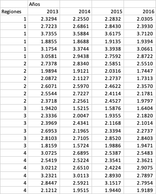
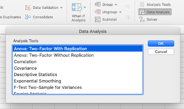
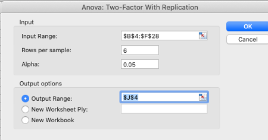
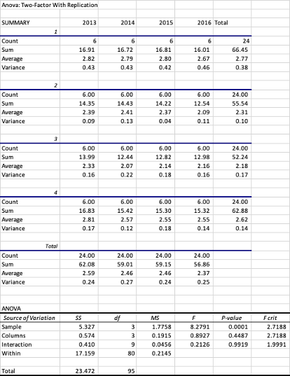

7.4- El ANAVA factorial o de dos factores con replicación
Este tipo de ANAVA es frecuente utilizarla en diseño experimental (bloques aleatorios)
y cuando trabajamos mediciones repetidas, es decir, cuando una observación ha sido hecha en el mismo individuo mas de una vez (antes y después), por ejemplo, cuando estamos midiendo parámetros fisiológicos en un individuo antes y después de algún tratamiento o al aplicar un estresor.
Al igual que el ANAVA sin replicación, el ANAVA factorial con replicación se utiliza cuando tenemos una variable medible (cuantitativa) y dos variables nominales (factores o efectos principales) que se hallan en todas las posibles combinaciones. En este caso tenemos tres H0 a considerar (Macdonald,2009):
-
1- que las medias de las variables medidas son iguales para los diferentes valores de la primera variable nominal;
-
2- que las medias son iguales para los diferentes valores de la segunda variable;
- 3- que no existe interacción (los efectos de una variable nominal no dependen de los valores de la otra variable nominal).
Se recomienda que los tamaños de las muestras de los subgrupos sean iguales ya que esto facilita el análisis. Si queremos realizar este tipo de prueba en Excel su herramienta “Data Analysis” lo permite siempre y cuando el diseño esté balanceado.
Por ejemplo, en una región de producción lechera en Colombia se ha establecido un plan de mejoramiento de calidad e higiene de hatos lecheros durante cuatro años y nos interesa ver si los planes de control e higiene en establo han generado algún progreso entre los años 2013 al 2016 en el promedio logarítmico de células somáticas (SCC/ml) en cuatro subregiones lecheras. Para ello calculamos los promedios logarítmicos de SCC en 6 hatos representativos de una de las cuatro regiones en donde se realizaron las actividades de educación y control (24 en total). Entonces, en este caso utilizamos la opción ANAVA doble factorial con replicación . Para ello tenemos todos los resultados de los 6 hatos por cada región o sea 24 datos por año durante 4 años, para un total de 96 registros.

Tabla con los recuentos logarítmicos de células somáticas para 4 regiones lecheras durante 4 años.
La tabla superior presenta el promedio logarítmico de SCC para cada uno de los hatos distribuidos por región para cada año en cuestión. La tabla debe estar ordenada y adecuadamente balanceada (las mismas observaciones por variable) en este caso 6 por región y 24 por año. Una vez tenemos nuestros datos limpios y organizados, del menú Data Analysis seleccionamos la opción ANOVA dos factores con replicación (ANOVA: two-factor with replication).

En el menú de diálogo seleccionar la opción "ANOVA: two-factor with replication" ANAVA dos factores con replicación
Inmediatamente se abre una hoja de diálogo que nos pide seleccionar el rango de las celdas donde se encuentra la tabla (incluir los encabezados), y posteriormente se debe escribir el número de filas por cada muestra, para este caso son 6 por región (las regiones están en las filas) se debe tener en cuenta que son las mismas observaciones para cada muestra (región). Luego seleccionamos el 𝛼 (0.05) y finalmente el lugar donde se desea generar el reporte, como siempre las opciones pueden ser dentro del página actual, en una nueva página o un archivo diferente.

Selección de opciones para generar el ANAVA
Una vez presionamos OK, Excel genera un reporte con toda la información (ver tabla inferior). El reporte esta dividido en dos tablas, la primera presenta el resumen descriptivo (numero de fincas, sumas, promedio y varianza) para cada región por año, así como para la totalidad, y la segunda tabla presenta el ANAVA para las regiones (Sample), para los años (Columns) y para la interacción de las dos variables.

Selección de opciones para generar el ANAVA
Enfocandonos en los resultados del ANAVA, la primera fila (Sample) muestra los resultados de las filas que para nuestro ejemplo serian las regiones. Para este caso el valor de F (8.27) es mayor que el F crítico (2.71) y el P-value es inferior a 0.0001 (inferior al valor de 𝛼 = 0.05) por tanto no podemos aceptar la H0 y podemos confirmar con un 95% de confianza que las medias del SCC logarítmico son diferentes entre regiones. En la siguiente fila tenemos el análisis de las columnas, en este caso el valor de F (0.89) es inferior al F crítico (2.71) y el P-Value (0.44) es superior al 𝛼 por tanto no podemos rechazar la H0 y podemos afirmar con 95% de confianza que las medias del conteo